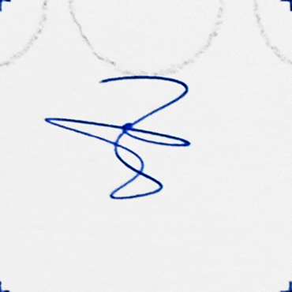

I am an artist and educator living in Winnipeg, Manitoba, Canada. My work oscillates between painting, drawing, artist books, experimental robotics, plaster casting, and the computer browser. I use found materials in my work alongside simple rules and iterative processes to build images that bridge material and computational ideas.
Across my studio and digital projects, I focus on perception as a key subject. Many artworks treat drawing as a temporal event that is consummated by the viewer. Techniques such as stereoscopic free-viewing encourages active viewer participation while exposing the link between the pictorial structure and embedded computational logic.
I use the computer browser to extend my work in ways that are not possible
in physical media. Recursive interfaces, cellular automata, and
interactive motion systems often combine visitor input with autonomous
behaviours, producing outcomes that shift from one encounter to the next.
grunskm@gmail.com
@grunskm